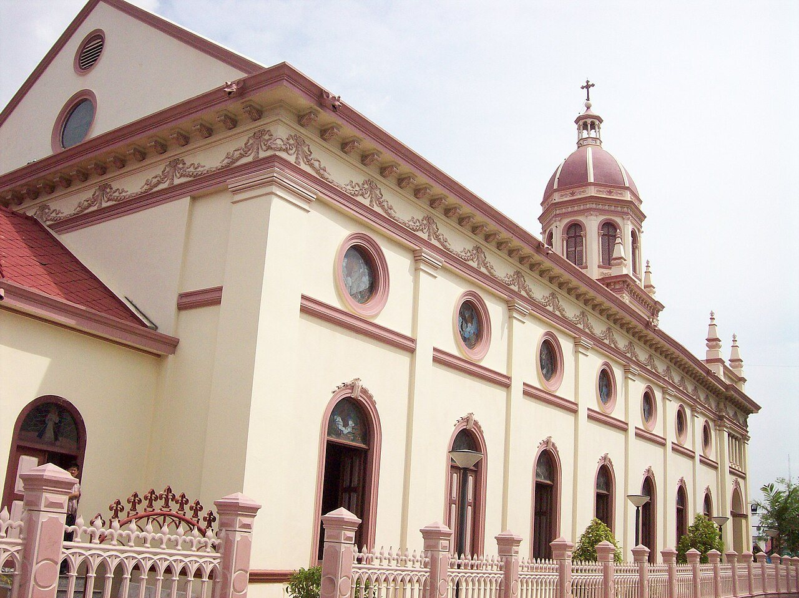
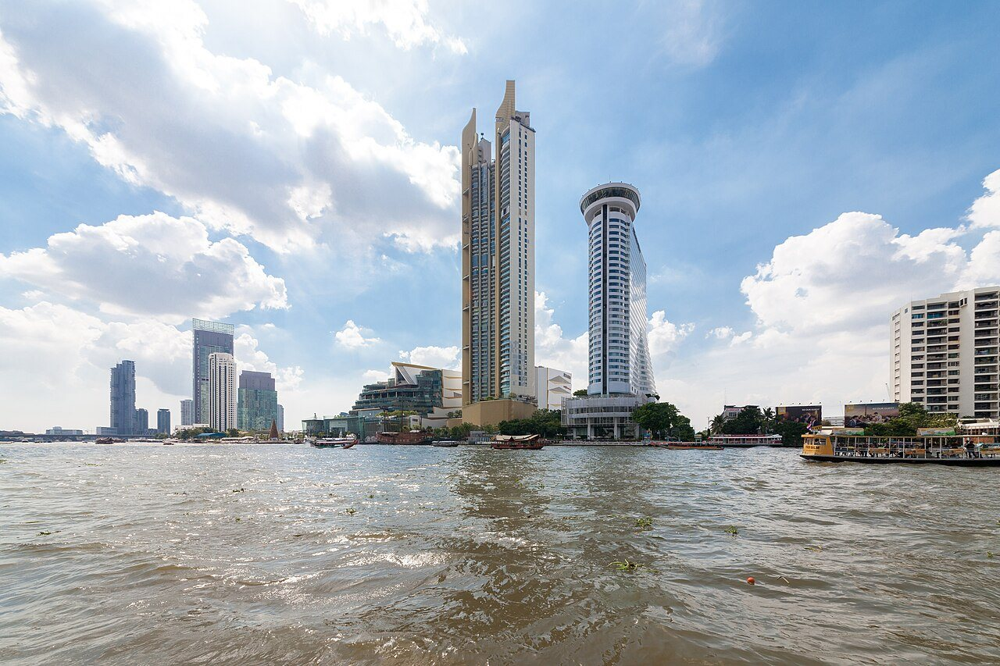
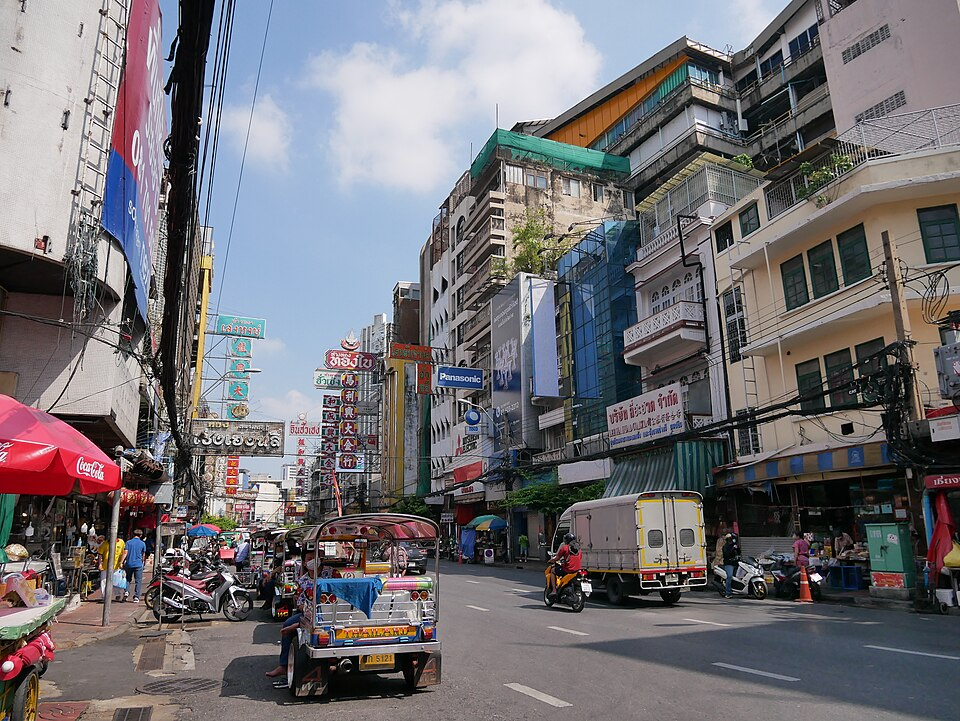

One Day · ฝั่งธนบุรี
เที่ยวฝั่งธนฯ 1 วันเต็ม — เริ่มจากคลองสาน
🕗 เช้าจรดค่ำ
🚶 เดิน + เรือ + BTS
💸 ค่าเดินทาง ~150-350 บาท
ฝั่งธนบุรีคือกรุงเทพฯ ที่นักท่องเที่ยวส่วนใหญ่พลาด — วัดริมน้ำ ชุมชนเก่าแก่ ตลาดจริงของคนพื้นที่ ทั้งหมดอยู่ในระยะเดิน+เรือ+รถไฟฟ้าไม่กี่นาทีจากที่พักเรา นี่คือเส้นทาง 1 วันที่เราแนะนำแขกทุกคน




ภาพประกอบ · Wikimedia Commons · credits
ได้ แต่ไม่ใช่วันที่ดีที่สุด ร้านย่านเยาวราชหยุดวันจันทร์ค่อนข้างเยอะ ถ้าเลือกได้แนะนำอังคารถึงอาทิตย์ ถ้าติดวันจันทร์จริง ๆ สลับช่วงเย็นไปเป็นริมน้ำฝั่งธนฯ แทนได้
รวมทั้งวันราว 6–8 กิโลเมตร กระจายเป็นช่วงสั้น ๆ ระหว่างจุด ไม่ได้เดินรวดเดียว รองเท้าที่เดินสบายสำคัญกว่าอย่างอื่น และเข้าวัดต้องคลุมไหล่-เข่า
ได้ทุกจุด ทุกจุดในแผนนี้ห่างที่พักไม่เกิน 15 นาที กลับมางีบตอนบ่ายแล้วค่อยออกไปต่อตอนเย็นเป็นวิธีที่เราแนะนำกับแขกที่มากับเด็กหรือผู้สูงอายุ
กดชื่อสถานที่เพื่อเปิดหมุดใน Google Maps — ใช้ชื่อภาษาอังกฤษแบบที่ Google ค้นเจอ
* เวลาเปิด-ปิดของแต่ละที่อาจเปลี่ยนได้ เช็คก่อนไปหรือถามเราตอนเช็คอิน
เขียนโดยทีม House of Happiness · ปรับปรุงล่าสุด